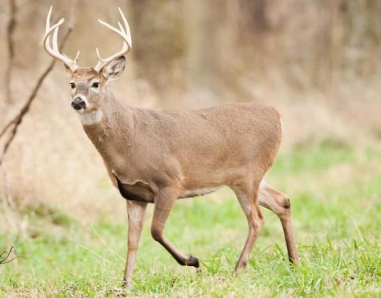

So you have met a deer! These animals are herbivores that belong to the cervidae family. Deers can be found all over the world & can also be found in suburbs due to loss of habitat. these animals do best in being away from people so please don't try to interact with the deer you have now spotted. These deers horns are incased in "velvet", a highly vascularized, nerve-filled skin covered by short, soft hairs.